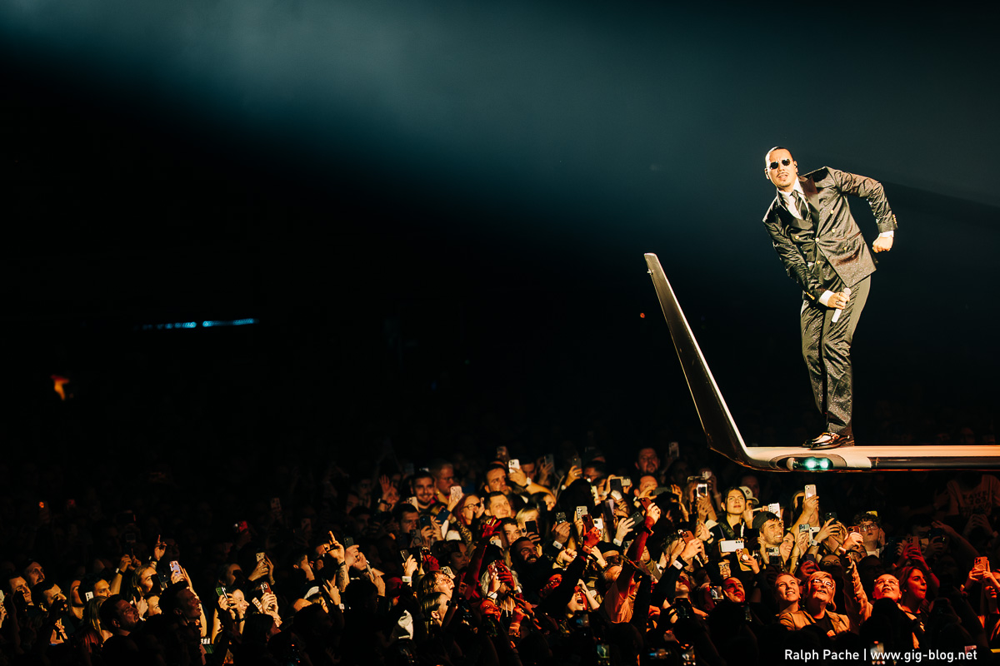

Deck by Leeroy - Flugmodus GmbH - For your eyes only
Apache207 spielt am 12. Oktober 2026 sein Tourfinale in Hamburg und gleichzeitig auch seine 100. Arenashow. Ein großer Meilenstein nach einem langen Weg, sowohl für Apache, als auch für sein Team, seine Familie und allen um ihn herum. Dies gilt es nun für die Zukunft festzuhalten und einzufangen - vor allem jedoch das Gefühl, dabei zu sein und das ganze zu erleben, zu replizieren.
Apaches Show geht ca. 2 Stunden und besteht aus verschiedenen Interaktiven Elementen und Positionen. Das Hauptaugenmerk liegt auf dem geteilten Flugzeug, welches das Center-Piece der Show darstellt. „Feder-Airlines“ nennt sich die Fluglinie, die Volkan auf der Bühne auch als Pilot verkörpert. Gleichzeitig schwebt er in anderen Momenten der Show auf einer Wolke, die sich durch die Crowd bewegt, anstatt an einem fixen Punkt zu sein.
Um die Emotionalität des Weges von Volkan und seiner Crew festzuhalten, spielen wir mit dem Gedanken, die Show nicht einfach klassisch aufzuzeichnen und an einem Stück zu schneiden, sondern vielmehr, eine cinematische Experience & emotionale Reise draus zu machen. Hierzu brechen wir ab und zu den Showfilm und bringen mithilfe von Voice-Over und ausgewählten Bildern (die ggf. auch noch unabhängig von der Show gedreht werden müssen) zusätzliche Sequenzen hinein, die den Zuschauer retroperspektiv einfangen.
Diese Sequenzen sind variabel und können mehr, oder auch sehr dezent eingesetzt werden.
Intro: Ein emotionales Intro zu Beginn des Showvideos hyped uns auf das, was noch kommt - zeigt aber auch, was es gebraucht hat um hier her zu kommen. Bilder von früher, Videos aus der Hood wo auf der Straße vor einer Hand voll Leuten gerappt wurde und die ersten Musikvideos - heute stehen wir beim Soundcheck in einer leeren Arena. Ein Voice Over von Volkan begleitet und erklärt seine Gefühlslage, ganz transparent und ehrlich. Er freut sich auf die 100. Show und das, was ihm das alles gebracht hat.
Dann -> Show. Erstmal ein längerer Part, mehrere Songs.
Ab einem gewissen Punkt kommt nochmal ein Break - wieder eine kleine Videosequenz, die vielleicht altes Material oder Footage aus den Proben zur Tour zeigt, O-Töne aus diesem Zeitraum. Wir bringen dadurch einen Behind the Scenes Character und gewisse Nahbarkeit mit in unseren Tourfilm.
So bauen wir uns durch den Film kleine Breaks ein, die mit einem langen Echo des Songs davor introduced werden und einem Flashbackartige Eindrücke geben. Ein Intro baut die Spannung auf, ein weiterer Break gibt uns Eindrücke hinter die Kulissen, ein anderer Break Wiederrum holt uns wieder zurück in die Vergangenheit - bis wir am Schluss unseres Films angekommen sind und ein Outro einbinden, welches den Blick nach vorne zeigt und auf das Hunger macht, was in der Zukunft noch kommt. Die nächsten 100 Shows? Musik? Wir wissen es noch nicht.
Die Show selbst wird natürlich mit einem hochcinematischen Ansatz verfolgt, wobei die Detailplanung noch aussteht. Verschiedene Kamerapositionen bringen uns die klassisch notwendigen Positionen, wobei wir natürlich gerne für die letzte Show mehr Specials einbinden wollen würden. Solche könnten sein:
Um die Abwechslung noch weiter zu steigern, würden wir vor allem im Schnitt später bei ausgewählten Songs fixe Konzepte verfolgen. Beispielsweise besteht ein Song zum Großteil nur aus Camcorder Aufnahmen, ein anderer könnte komplett in Schwarz-Weiß abgedeckt sein bis auf bestimmte Elemente, die ausmaskiert werden. Ein anderer Song konzentriert sich vielleicht fast auf ausschließlich Crowd und zeigt den kompletten Song, wie er word for word von anderen Menschen gesungen wird - wie ein kleines Fan-Musikvideo. Auf der Wolke können wir durch VFX / AI weitere Wolken in der Arena einbinden, um ein bigger Picture zu ermöglichen.
Dies gilt es, fix zu Skripten und bestimmte Highlightsongs + Moods auszuwählen.
Natürlich ist es auch möglich, diesen cinematischen Monolog-Ansatz zu verwerfen und das Konzert von Anfang bis Ende (wie ein klassisches Live-Set halt) in einem durch zu zeigen, ohne dabei die Zuschauer rauszuholen. Die Idee oben entstand einzig und allein aus dem Gedanken, Volkans bisheriger Showkarriere noch mehr Substanz und Einblick in die Emotionalität zu geben.
Deck by Leeroy - For your eyes only
Ein Video auf einen Medienplatz der aktuellen Folie ziehen. Zum Entfernen über das Video fahren.